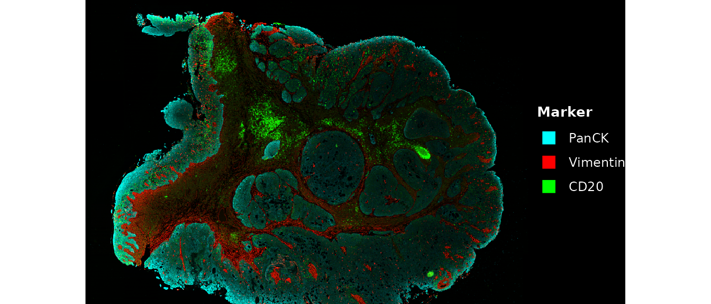
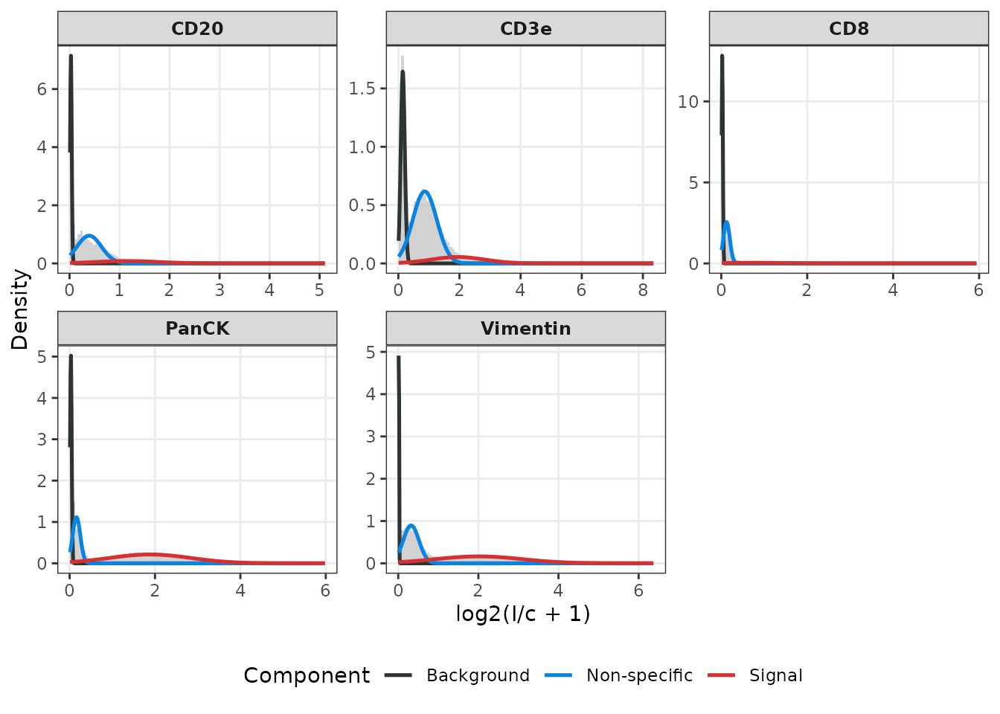
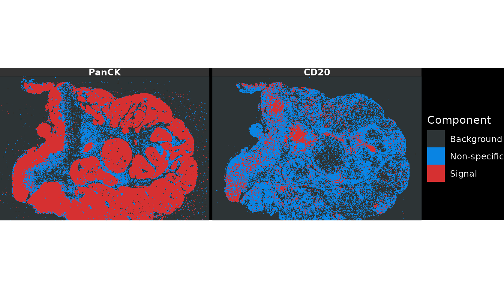
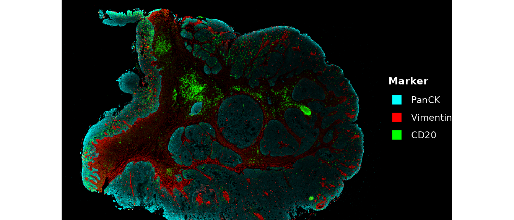
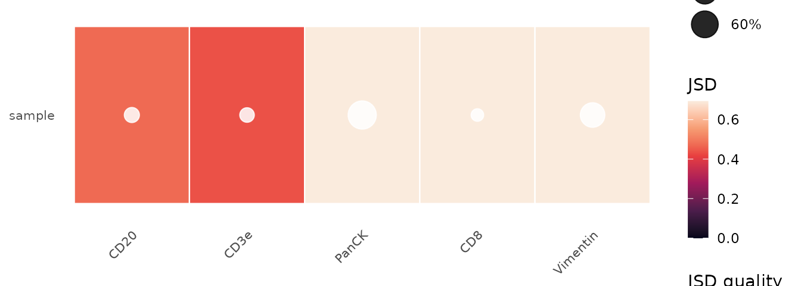
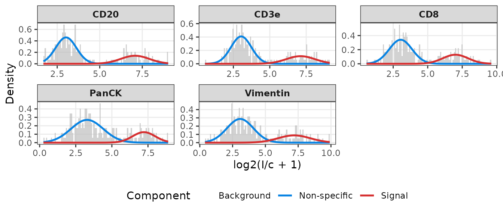
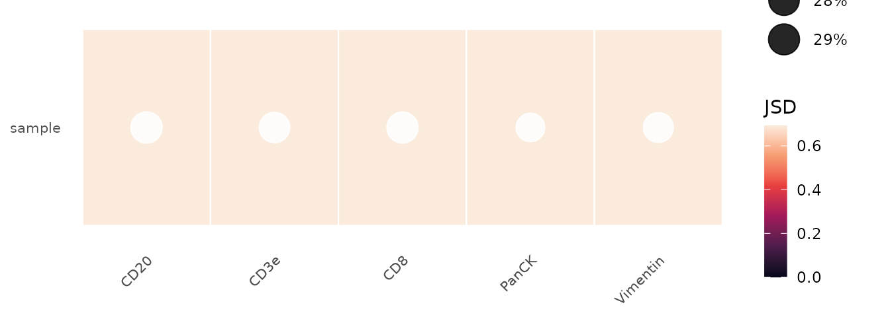

Introduction
bgnorm (Kharbanda, Tubelleza et al. 2025) is a generative statistical framework for background correction, normalisation, and quality control of multiplex spatial proteomics data, including data from the Akoya PhenoCycler-Fusion (formerly CODEX), Cell DIVE, IMC, and CosMx platforms.
The framework models log2-transformed fluorescence intensities as a three-component Gaussian Mixture Model (GMM):
| Component | Biological interpretation |
|---|---|
| 1 | Background (empty space, instrument noise) |
| 2 | Non-specific binding / autofluorescence |
| 3 | True biological signal |

Three-component signal model: each pixel intensity X is the sum of independent latent sources U1 (background), U2 (non-specific), and U3 (signal).
A closed-form deconvolution step isolates the signal component from background sources. An optional quantile normalisation step (bgnormQ) unifies the dynamic range across markers, samples, and 3-D tissue slices, enabling a single fixed positivity threshold across the dataset.
The Jensen-Shannon Divergence (JSD) between components 2 and 3 provides an automated quality control metric: higher JSD indicates better staining quality.
Installation
if (!requireNamespace("BiocManager", quietly = TRUE))
install.packages("BiocManager")
BiocManager::install("bgnormR")Example dataset
The package includes a cropped head-and-neck cancer (HNC) tissue
section imaged on an Akoya PhenoCycler-Fusion platform. The file ships
at inst/extdata/PA_HNC_sample.qptiff and contains five
markers across a 550 × 800 pixel region.
path <- system.file("extdata", "PA_HNC_sample.qptiff", package = "bgnormR")
img <- read_qptiff(path)
img
#> QPTIFFImage
#> Dimensions: 550 x 800 (H x W)
#> Channels : 5
#> Names : CD20, CD3e, CD8, PanCK, Vimentin
#> Format : unknown
#> Levels : 1read_qptiff() parses the channel names from the embedded
metadata, so names(img) returns the protein names
directly:
names(img) # five-plex panel
#> [1] "CD20" "CD3e" "CD8" "PanCK" "Vimentin"
dim(img) # height × width × channels
#> [1] 550 800 5Pixel-level normalisation
Raw intensity maps
Before normalisation, visualise the raw 16-bit intensities to confirm
the image loaded correctly. plot_qptiff() renders one panel
per requested channel.
plot_qptiff(img, markers = c("PanCK", "Vimentin", "CD20"))
Running bgnorm_pixels
bgnorm_pixels() fits a three-component GMM to each
channel independently. sample_prop controls the fraction of
non-zero pixels used for fitting — the default 0.1 (10 %) is sufficient
for full-resolution Akoya images while keeping runtime short.
res <- bgnorm_pixels(img, sample_prop = 0.1)
res
#> QPTIFFImage
#> Dimensions: 550 x 800 (H x W)
#> Channels : 5
#> Names : CD20, CD3e, CD8, PanCK, Vimentin
#> Format : unknown
#> Levels : 1
#> bgnorm : yes (5 channel(s))res is a QPTIFFImage whose pixel values are
the background-adjusted log2-intensities. Per-channel model
parameters are stored as an attribute and retrieved with
bgnorm_results():
br_panck <- bgnorm_results(res)[["PanCK"]]
print(br_panck)
#> BgnormResult (pixel-level)
#> n = 440000
#> Component means: 0.03 0.161 1.884
#> JSD (QC metric): 0.8811
#> BIC (G=2): -1.67 BIC (G=3): -1.38
#> No signal detected: FALSE
#> Quantile normalised: FALSE
#> Tissue positivity: 67%summary() shows the full component table:
summary(br_panck)
#> BgnormResult summary (pixel-level)
#> JSD: 0.8811
#> Quantile normalised: FALSE
#>
#> component mean sd proportion
#> Background 0.0299 0.0186 0.2378
#> Non-specific 0.1606 0.0897 0.2512
#> Signal 1.8837 0.9511 0.5110Intensity distributions with GMM overlay
plot_distributions() draws the raw
log2-intensity histogram alongside the fitted GMM component
densities.
plot_distributions(res)
The three overlaid curves correspond to the background (blue), non-specific (orange), and signal (red) components. Markers with well-separated signal components (PanCK, Vimentin) show a clearly distinct red peak at high intensity.
Background class assignment
plot_pixel_classes() colours each pixel by its MAP
component assignment (background / non-specific / signal).
plot_pixel_classes(res, markers = c("PanCK", "CD20"))
Adjusted intensity maps
After normalisation, visualise the background-adjusted images. The
adjusted values are stored inside res (the returned
QPTIFFImage), so plot_qptiff(res) displays
them directly — applying the 2^x back-transform so the
display is in linear intensity units.
plot_qptiff(res, markers = c("PanCK", "Vimentin", "CD20"), scale = "marker")
Quantile normalisation (bgnormQ)
Setting quantile_norm = TRUE rescales adjusted
intensities so that the 75th percentile of the fitted signal component
equals 1 across all markers. This enables a single positivity threshold
to be applied consistently across markers, samples, and tissue
sections.
res_q <- bgnorm_pixels(img, sample_prop = 0.1, quantile_norm = TRUE)Quality control
JSD summary table
qc_summary() computes the JSD between the non-specific
and signal components for every marker in a single call.
qc_df <- qc_summary(res)
qc_df
#> name jsd prop_signal
#> 1 CD20 0.4721159 0.12582686
#> 2 CD3e 0.4379568 0.11888275
#> 3 CD8 0.7073366 0.06469394
#> 4 PanCK 0.8811337 0.51098633
#> 5 Vimentin 0.7507301 0.44383123JSD values below 0.1 indicate likely failed staining; values between 0.1 and 0.2 warrant manual inspection (Kharbanda et al. 2025).
JSD heatmap
plot_jsd_heatmap() summarises the JSD per marker as a
heatmap, with circles indicating data quality (white ≥ 0.2, orange
0.1–0.2, red < 0.1). Pass a named list of QPTIFFImages
to compare multiple samples side-by-side.
plot_jsd_heatmap(res)
Exporting normalised images
write_qptiff() saves a QPTIFFImage as a
multi-page 16-bit TIFF, one page per channel. For bgnorm-adjusted images
the pixel values are back-transformed to a linear scale
(2^x) before writing. Channel names and bgnorm model
parameters are embedded in each page’s ImageDescription tag
so the file remains self-documenting.
out <- file.path(tempdir(), "PA_HNC_bgnorm.tif")
write_qptiff(res, out)
# Read back – channel names are preserved
img_out <- read_qptiff(out)
names(img_out)
#> [1] "CD20" "CD3e" "CD8" "PanCK" "Vimentin"
dim(img_out)
#> [1] 550 800 5Cell-level normalisation
When only per-cell intensity summaries (mean or median intensity per
cell) are available, use bgnorm_cells(), which applies a
two-component GMM (non-specific / signal) rather than the full
three-component pixel model.
Single-marker: bgnorm_cells
set.seed(3)
cell_intensities <- inv_log_transform(
c(rnorm(300, mean = 3, sd = 0.5),
rnorm(100, mean = 7, sd = 0.9)),
cofactor = 150
)
res_cell <- bgnorm_cells(cell_intensities)
print(res_cell)
#> BgnormResult (cell-level)
#> n = 400
#> Component means: 3.022 6.965
#> JSD (QC metric): 0.986
#> No signal detected: FALSE
#> Quantile normalised: FALSE
#> Tissue positivity: 25.1%Integration with SummarizedExperiment
bgnorm_sce() processes a
SummarizedExperiment (or any subclass such as
SingleCellExperiment or SpatialExperiment): it
reads the requested assay, runs bgnorm_cells()
independently for each marker, and stores the adjusted intensities in a
new assay alongside per-marker BgnormResult objects in
metadata().
library(SummarizedExperiment)
set.seed(5)
n_cells <- 200L
n_markers <- 5L
marker_names <- c("CD20", "CD3e", "CD8", "PanCK", "Vimentin")
make_cell_raw <- function(j) {
inv_log_transform(
c(rnorm(round(n_cells * 0.7), 3, 0.5 + 0.1 * j),
rnorm(round(n_cells * 0.3), 7, 0.8 + 0.1 * j)),
cofactor = 150
)
}
raw_mat <- do.call(rbind, lapply(seq_len(n_markers), make_cell_raw))
rownames(raw_mat) <- marker_names
colnames(raw_mat) <- paste0("cell", seq_len(n_cells))
se <- SummarizedExperiment(assays = list(counts = raw_mat))
se <- bgnorm_sce(se, assay.type = "counts", name = "bgnorm")
assayNames(se)
#> [1] "counts" "bgnorm"Per-marker model parameters are accessible via
metadata():
Distributions and QC for cell-level data
plot_distributions() and plot_jsd_heatmap()
both accept a SummarizedExperiment with bgnorm results
stored in metadata().

plot_jsd_heatmap(se)
qc_summary(bgnorm_meta)
#> name jsd prop_signal
#> 1 CD20 0.9892432 0.2964197
#> 2 CD3e 0.9684877 0.2811681
#> 3 CD8 0.9548634 0.2952482
#> 4 PanCK 0.9244953 0.2446019
#> 5 Vimentin 0.8745865 0.2712931Session information
sessionInfo()
#> R version 4.6.1 (2026-06-24)
#> Platform: x86_64-pc-linux-gnu
#> Running under: Ubuntu 24.04.4 LTS
#>
#> Matrix products: default
#> BLAS: /usr/lib/x86_64-linux-gnu/openblas-pthread/libblas.so.3
#> LAPACK: /usr/lib/x86_64-linux-gnu/openblas-pthread/libopenblasp-r0.3.26.so; LAPACK version 3.12.0
#>
#> locale:
#> [1] LC_CTYPE=C.UTF-8 LC_NUMERIC=C LC_TIME=C.UTF-8
#> [4] LC_COLLATE=C.UTF-8 LC_MONETARY=C.UTF-8 LC_MESSAGES=C.UTF-8
#> [7] LC_PAPER=C.UTF-8 LC_NAME=C LC_ADDRESS=C
#> [10] LC_TELEPHONE=C LC_MEASUREMENT=C.UTF-8 LC_IDENTIFICATION=C
#>
#> time zone: UTC
#> tzcode source: system (glibc)
#>
#> attached base packages:
#> [1] stats4 stats graphics grDevices utils datasets methods
#> [8] base
#>
#> other attached packages:
#> [1] SummarizedExperiment_1.42.0 Biobase_2.72.0
#> [3] GenomicRanges_1.64.0 Seqinfo_1.2.0
#> [5] IRanges_2.46.0 S4Vectors_0.50.1
#> [7] BiocGenerics_0.58.1 generics_0.1.4
#> [9] MatrixGenerics_1.24.0 matrixStats_1.5.0
#> [11] bgnormR_0.99.0 BiocStyle_2.40.0
#>
#> loaded via a namespace (and not attached):
#> [1] gtable_0.3.6 rjson_0.2.23
#> [3] xfun_0.59 bslib_0.11.0
#> [5] ggplot2_4.0.3 htmlwidgets_1.6.4
#> [7] lattice_0.22-9 vctrs_0.7.3
#> [9] tools_4.6.1 parallel_4.6.1
#> [11] tibble_3.3.1 pkgconfig_2.0.3
#> [13] Matrix_1.7-5 RColorBrewer_1.1-3
#> [15] S7_0.2.2 desc_1.4.3
#> [17] lifecycle_1.0.5 compiler_4.6.1
#> [19] farver_2.1.2 textshaping_1.0.5
#> [21] tiff_0.1-12 codetools_0.2-20
#> [23] htmltools_0.5.9 sass_0.4.10
#> [25] yaml_2.3.12 pkgdown_2.2.0
#> [27] pillar_1.11.1 jquerylib_0.1.4
#> [29] BiocParallel_1.46.0 SingleCellExperiment_1.34.0
#> [31] DelayedArray_0.38.2 cachem_1.1.0
#> [33] magick_2.9.1 abind_1.4-8
#> [35] mclust_6.1.2 tidyselect_1.2.1
#> [37] digest_0.6.39 dplyr_1.2.1
#> [39] bookdown_0.47 labeling_0.4.3
#> [41] fastmap_1.2.0 grid_4.6.1
#> [43] cli_3.6.6 SparseArray_1.12.2
#> [45] magrittr_2.0.5 S4Arrays_1.12.0
#> [47] withr_3.0.3 scales_1.4.0
#> [49] rmarkdown_2.31 XVector_0.52.0
#> [51] otel_0.2.0 ragg_1.5.2
#> [53] SpatialExperiment_1.22.0 evaluate_1.0.5
#> [55] knitr_1.51 viridisLite_0.4.3
#> [57] rlang_1.2.0 Rcpp_1.1.1-1.1
#> [59] glue_1.8.1 xml2_1.6.0
#> [61] BiocManager_1.30.27 jsonlite_2.0.0
#> [63] R6_2.6.1 systemfonts_1.3.2
#> [65] fs_2.1.0